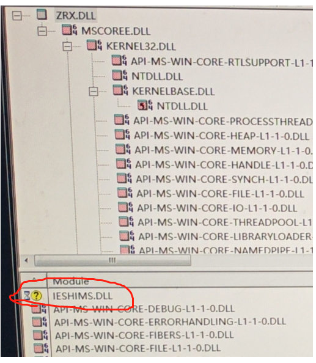

Description
When developing .NET programs in ZWCAD, developers often encounter issues. This chapter summarizes these problems to help developers quickly find solutions.
Issue 1: Break Mode Exception
As shown below, debugging .NET programs in ZWCAD may frequently enter "Application is in Break Mode," preventing further code debugging.

Causes and Solutions:
This issue primarily occurs when debugging WinForm dialogs. The solution is to execute the NETDEBUG command after starting the debugger, then use the debug panel to run commands for code debugging.
Issue 2: Slow Debugging Startup
Many users report that launching ZWCAD for debugging is extremely slow.
Causes and Solutions:
The delay may be due to ZWCAD loading excessive LISP module debugging information during startup. Try renaming zwlisp.zrx in the ZWCAD installation directory.
Alternatively, start ZWCAD first, use the NETLOAD command to load the DLL, then attach to the zwcad.exe process in the task list via "Attach to Process."
Issue 3: DLL Plugin Load Failure
Developers often face issues where compiled DLLs fail to load via NETLOAD. Below are common solutions.
Case 1: Failure During Development
Possible Cause 1:
Verify the compilation settings: .NET projects for ZWCAD 2017-2020 must use NetFramework 4.0, while ZWCAD 2021-2025 require NetFramework 4.7. ZRX projects for ZWCAD 2017-2020 need v100 compilation, and ZWCAD 2021-2025 require v141.
Possible Cause 2:
Missing dependency libraries. If a ZRX project references third-party libraries not in the search path, loading may fail. Note: Starting with ZWCAD 2024, dynamic link libraries in the ZRX directory must also be added to the search path.
Case 2: Inconsistent Loading Across Computers
Possible Cause 1:
High security settings on some computers may lock the DLL/ZRX. Right-click the file, open Properties, and unlock it.

Possible Cause 2:
Missing system DLLs. Compile in Release mode to minimize dependency on debug libraries. Use the Depends tool to identify missing system dependencies.

Possible Cause 3:
Insufficient permissions. Try launching ZWCAD with Administrator privileges.
Possible Cause 4:
The Standard Edition of ZWCAD does not support ZRX/DLL loading. Upgrade to the Professional Edition.
Issue 4: Calling ZRX Functions in .NET
While .NET interfaces cover most ZRX functions, some require direct invocation. Below are examples of common ZRX functions in .NET:
[DllImport("zwcad.exe", EntryPoint = "zcedCommand")]
private static extern int acedCommand(IntPtr vlist);
[DllImport("zwcad.exe", EntryPoint = "zcedCmd", CharSet = CharSet.Unicode, CallingConvention = CallingConvention.Cdecl)]
private static extern int zcedCmd(System.IntPtr vlist);
[CommandMethod("Test")]
static public void HelloCS()
{
ResultBuffer rb2 = new ResultBuffer
{
new TypedValue((int)LispDataType.Text, "layer"),
new TypedValue((int)LispDataType.Text, "m"),
new TypedValue((int)LispDataType.Text, "net7"),
new TypedValue((int)LispDataType.Text, "")
};
zcedCmd(rb2.UnmanagedObject);
}
[DllImport("ZwDatabase.dll", CallingConvention = CallingConvention.Cdecl, EntryPoint = "?zcdbGetZdsName@@YA?AW4ErrorStatus@Zcad@@AEAY01_JVZcDbObjectId@@@Z")]
static extern int zcdbGetZdsName(out ZdsName ename, ObjectId id);
[DllImport("zwcad.exe", CallingConvention = CallingConvention.Cdecl, EntryPoint = "zcdbEntGet")]
static extern IntPtr zcdbEntGet(ZdsName ename);
[CommandMethod("UpdateDim")]
public void UpdateDim()
{
var doc = Application.DocumentManager.MdiActiveDocument;
var db = doc.Database;
var ed = doc.Editor;
var promptRes = ed.GetEntity("\nPick a Dim:");
if (promptRes.Status != PromptStatus.OK)
{
return;
}
using(var tr = db.TransactionManager.StartTransaction())
{
var Ent = tr.GetObject(promptRes.ObjectId, OpenMode.ForRead) as Entity;
if (Ent is Dimension dim)
{
var dict = tr.GetObject(dim.ExtensionDictionary, OpenMode.ForRead) as DBDictionary;
var extDictId = dict.GetAt("ACAD_DIMASSOC");
ZdsName ename;
zcdbGetZdsName(out ename, extDictId);
var result = zcdbEntGet(ename);
if (result != IntPtr.Zero)
{
var resBuffer = ResultBuffer.Create(result, true);
foreach (var item in resBuffer)
{
if (item.TypeCode == 331)
{
var assocEnt = tr.GetObject((ObjectId)item.Value, OpenMode.ForWrite) as Entity;
assocEnt.RecordGraphicsModified(true);
break;
}
}
}
}
//Ent.RecordGraphicsModified(true);
tr.Commit();
}
}
}
[DllImport("zwcad.exe", EntryPoint = "zcedPostCommand", CharSet = CharSet.Unicode, CallingConvention = CallingConvention.Cdecl)]
extern static private int acedPostCommand(string strExpr);
[DllImport("zwcad.exe", CharSet = CharSet.Unicode, CallingConvention = CallingConvention.Cdecl, EntryPoint = "zcedUsrBrk")]
extern static private int UsrBrk();
[System.Security.SuppressUnmanagedCodeSecurity]
[DllImport("zwcad.exe", CharSet = CharSet.Unicode, CallingConvention = CallingConvention.Cdecl, EntryPoint = "?zcedGetEnv@@YAHPEB_WPEA_W_K@Z")]// Case sensitivity cannot be changed
static extern int AcedGetEnv(string envName, StringBuilder ReturnValue);
[CommandMethod("HelloCS")]
static public void HelloCS()
{
Database db = HostApplicationServices.WorkingDatabase;
Document doc = Application.DocumentManager.GetDocument(db);
ZwSoft.ZwCAD.EditorInput.Editor ed = doc.Editor;
StringBuilder ReturnValue = new StringBuilder(1024);
AcedGetEnv("PLOTCONFIGPATH", ReturnValue);
ed.WriteMessage(ReturnValue.ToString());
}
Issue 5: Encountered the eLockViolation Exception When Operating the Database
When performing write operations on the database within commands defined using Session markers, event callback functions, palettes, or modaless dialogs, you must use the Document.LockDocument() method to lock the current document; otherwise, the eLockViolation exception will be thrown. Example code is as follows:
using (var acLckDoc = ZwSoft.ZwCAD.ApplicationServices.Application.DocumentManager.MdiActiveDocument.LockDocument())
{
// Performs write operations on the database
}